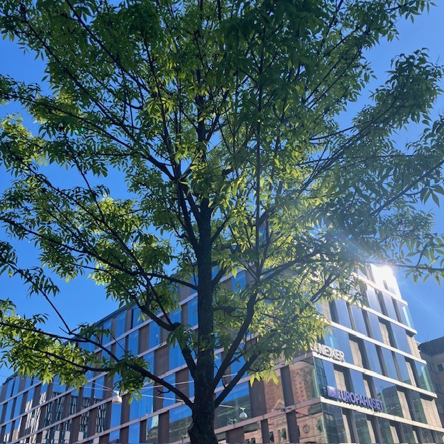

<!DOCTYPE html>
<html>
<head>
    
    <meta http-equiv="content-type" content="text/html; charset=UTF-8" />
    
        <script>
            L_NO_TOUCH = false;
            L_DISABLE_3D = false;
        </script>
    
    <style>html, body {width: 100%;height: 100%;margin: 0;padding: 0;}</style>
    <style>#map {position:absolute;top:0;bottom:0;right:0;left:0;}</style>
    <script src="https://cdn.jsdelivr.net/npm/leaflet@1.9.3/dist/leaflet.js"></script>
    <script src="https://code.jquery.com/jquery-3.7.1.min.js"></script>
    <script src="https://cdn.jsdelivr.net/npm/bootstrap@5.2.2/dist/js/bootstrap.bundle.min.js"></script>
    <script src="https://cdnjs.cloudflare.com/ajax/libs/Leaflet.awesome-markers/2.0.2/leaflet.awesome-markers.js"></script>
    <link rel="stylesheet" href="https://cdn.jsdelivr.net/npm/leaflet@1.9.3/dist/leaflet.css"/>
    <link rel="stylesheet" href="https://cdn.jsdelivr.net/npm/bootstrap@5.2.2/dist/css/bootstrap.min.css"/>
    <link rel="stylesheet" href="https://netdna.bootstrapcdn.com/bootstrap/3.0.0/css/bootstrap-glyphicons.css"/>
    <link rel="stylesheet" href="https://cdn.jsdelivr.net/npm/@fortawesome/fontawesome-free@6.2.0/css/all.min.css"/>
    <link rel="stylesheet" href="https://cdnjs.cloudflare.com/ajax/libs/Leaflet.awesome-markers/2.0.2/leaflet.awesome-markers.css"/>
    <link rel="stylesheet" href="https://cdn.jsdelivr.net/gh/python-visualization/folium/folium/templates/leaflet.awesome.rotate.min.css"/>
    
            <meta name="viewport" content="width=device-width,
                initial-scale=1.0, maximum-scale=1.0, user-scalable=no" />
            <style>
                #map_d089ef5787f0bbc82de63472d8517899 {
                    position: relative;
                    width: 100.0%;
                    height: 100.0%;
                    left: 0.0%;
                    top: 0.0%;
                }
                .leaflet-container { font-size: 1rem; }
            </style>
        
    <script src="https://cdnjs.cloudflare.com/ajax/libs/leaflet.markercluster/1.1.0/leaflet.markercluster.js"></script>
    <link rel="stylesheet" href="https://cdnjs.cloudflare.com/ajax/libs/leaflet.markercluster/1.1.0/MarkerCluster.css"/>
    <link rel="stylesheet" href="https://cdnjs.cloudflare.com/ajax/libs/leaflet.markercluster/1.1.0/MarkerCluster.Default.css"/>
</head>
<body>
    
    
            <div class="folium-map" id="map_d089ef5787f0bbc82de63472d8517899" ></div>
        
</body>
<script>
    
    
            var map_d089ef5787f0bbc82de63472d8517899 = L.map(
                "map_d089ef5787f0bbc82de63472d8517899",
                {
                    center: [59.3293, 18.0686],
                    crs: L.CRS.EPSG3857,
                    ...{
  "zoom": 15,
  "zoomControl": true,
  "preferCanvas": false,
}

                }
            );

            

        
    
            var tile_layer_e0b7260a8e2088d011c1f6e940beb05c = L.tileLayer(
                "https://{s}.basemaps.cartocdn.com/rastertiles/voyager/{z}/{x}/{y}{r}.png",
                {
  "minZoom": 0,
  "maxZoom": 20,
  "maxNativeZoom": 20,
  "noWrap": false,
  "attribution": "CartoDB",
  "subdomains": "abcd",
  "detectRetina": false,
  "tms": false,
  "opacity": 1,
}

            );
        
    
            tile_layer_e0b7260a8e2088d011c1f6e940beb05c.addTo(map_d089ef5787f0bbc82de63472d8517899);
        
    
            var marker_cluster_fd6f689f8fe75037c476a0be32c11f0d = L.markerClusterGroup(
                {
}
            );
        
    
            marker_cluster_fd6f689f8fe75037c476a0be32c11f0d.addTo(map_d089ef5787f0bbc82de63472d8517899);
        
    
            var marker_474ffc2387847c20a8a6a4db5b05a386 = L.marker(
                [59.33210074001757, 18.07150116288134],
                {
}
            ).addTo(map_d089ef5787f0bbc82de63472d8517899);
        
    
            var div_icon_8b877818accbe32ac1acb084f4c79595 = L.divIcon({
  "html": "\n        \u003cdiv style=\"background-color: #91D34C; color: white;\n                        border-radius: 50%; width: 28px; height: 28px;\n                        text-align: center; line-height: 28px;\n                        font-weight: bold;\"\u003e1\u003c/div\u003e\n        ",
  "className": "empty",
});
            marker_474ffc2387847c20a8a6a4db5b05a386.setIcon(div_icon_8b877818accbe32ac1acb084f4c79595);
        
    
        var popup_177da8257b4c8c13b889a109894dc6fe = L.popup({
  "maxWidth": 320,
});

        
            
                var html_001cb4b6549108da2d1431c2f3e35a02 = $(`<div id="html_001cb4b6549108da2d1431c2f3e35a02" style="width: 100.0%; height: 100.0%;">     <div style="max-height: 500px; width: 280px; overflow-y: auto; padding: 10px;">                  <h2 style='margin-bottom: 10px;'>1. Kungsträdgården, vid dammen</h2>         <h4 style='color: darkgreen; margin-top: 0;'>Prydnadskörsbär, Prunus ’Accolade’</h4>         <div style='font-size: 15px; line-height: 1.6; text-align: justify;'>       <div style="font-family: Arial, sans-serif; font-size: 15px; line-height: 1.6; text-align: justify;">      Det är inte varje dag man får promenera med huvudet i fluffiga rosa moln. Varje vår blir det en nyhet i hela landet när körsbärsträden i Kungsträdgården blommar. Stockholmare och turister vallfärdar för att fotografera denna blomsterfägring av vackert rosa, halvfyllda blommor i slutet av april.      <p>Körsbärsträden planterades 1998, i dubbla rader på båda sidorna av dammen. Träden är en hybrid mellan bergkörsbär (Prunus sargentii) och vårkörsbär (Prunus subhirtella). Den har en smalare krona i ungdomen men blir bredare med tiden, för att till slut få en nästan flat kronuppbyggnad, där grenarna hänger nedåt.</p>      <p>Andra platser i staden där du kan se prydnadskörsbär är på Luma torg i Hammarby Sjöstad.</p>      </div>      </div>         <div style="margin-top: 10px; display: flex; justify-content: center; gap: 8px; flex-wrap: wrap;">             <audio id="audio1" src="1.m4a"></audio>             <a href="javascript:document.getElementsByClassName('leaflet-marker-icon')[15].click();"               style="background-color: #91D34C; color: white; padding: 8px 12px;                       text-decoration: none; border-radius: 6px; display: inline-block;">               ← Föregående             </a>             <a href="javascript:document.getElementById('audio1').play();"               style="background-color: #FFA500; color: white; padding: 8px 12px;                       text-decoration: none; border-radius: 6px; display: inline-block;">               Lyssna             </a>             <a href="javascript:document.getElementsByClassName('leaflet-marker-icon')[1].click();"               style="background-color: #91D34C; color: white; padding: 8px 12px;                       text-decoration: none; border-radius: 6px; display: inline-block;">               Nästa →             </a>         </div>     </div>     </div>`)[0];
                popup_177da8257b4c8c13b889a109894dc6fe.setContent(html_001cb4b6549108da2d1431c2f3e35a02);
            
        

        marker_474ffc2387847c20a8a6a4db5b05a386.bindPopup(popup_177da8257b4c8c13b889a109894dc6fe)
        ;

        
    
    
                marker_474ffc2387847c20a8a6a4db5b05a386.setIcon(div_icon_8b877818accbe32ac1acb084f4c79595);
            
    
            var marker_8120bbb89aa5493f56a9f97bca624234 = L.marker(
                [59.33158633411901, 18.07190885862338],
                {
}
            ).addTo(map_d089ef5787f0bbc82de63472d8517899);
        
    
            var div_icon_a50c2404932a7b5302c4ce3062fa0177 = L.divIcon({
  "html": "\n        \u003cdiv style=\"background-color: #91D34C; color: white;\n                        border-radius: 50%; width: 28px; height: 28px;\n                        text-align: center; line-height: 28px;\n                        font-weight: bold;\"\u003e2\u003c/div\u003e\n        ",
  "className": "empty",
});
            marker_8120bbb89aa5493f56a9f97bca624234.setIcon(div_icon_a50c2404932a7b5302c4ce3062fa0177);
        
    
        var popup_23eaca7f5e9901cd99558e8b5649c33f = L.popup({
  "maxWidth": 320,
});

        
            
                var html_b07d191ca73de89bb3adcb0487a2d2c0 = $(`<div id="html_b07d191ca73de89bb3adcb0487a2d2c0" style="width: 100.0%; height: 100.0%;">     <div style="max-height: 500px; width: 280px; overflow-y: auto; padding: 10px;">                  <h2 style='margin-bottom: 10px;'>2. Kungsträdgården, vid alléerna</h2>         <h4 style='color: darkgreen; margin-top: 0;'>Skogslind, Tilia X cordata ’Rancho’, selektion av skogslind</h4>         <div style='font-size: 15px; line-height: 1.6; text-align: justify;'>       <div style="font-family: Arial, sans-serif; font-size: 15px; line-height: 1.6; text-align: justify;">      Lind är det vanligaste trädet på innerstadens gator. Framför allt på grund av esplanadsystemets utbyggnad under slutet av 1800-talet, men även för att det är lättskött och klarar sig ganska bra i staden. I Kungsträdgården står lindarna i två, dubbelradiga alléer på var sida om parken – Jussi Björlings allé och Birgit Nilssons allé. Träden som står där idag planterades 1996 och 2003–2006.      <p>Benämningen cordata syftar till bladens hjärtform. Linden kan under sommaren avge så kallad honungsdagg – ett sekret som utsöndras av löss som suger växtsaft ur bladen.</p>      <p>Andra platser i staden där du kan se skogslind är på trottoaren vid Hammarby allé.</p>      </div>      </div>         <div style="margin-top: 10px; display: flex; justify-content: center; gap: 8px; flex-wrap: wrap;">             <audio id="audio2" src="2.m4a"></audio>             <a href="javascript:document.getElementsByClassName('leaflet-marker-icon')[0].click();"               style="background-color: #91D34C; color: white; padding: 8px 12px;                       text-decoration: none; border-radius: 6px; display: inline-block;">               ← Föregående             </a>             <a href="javascript:document.getElementById('audio2').play();"               style="background-color: #FFA500; color: white; padding: 8px 12px;                       text-decoration: none; border-radius: 6px; display: inline-block;">               Lyssna             </a>             <a href="javascript:document.getElementsByClassName('leaflet-marker-icon')[2].click();"               style="background-color: #91D34C; color: white; padding: 8px 12px;                       text-decoration: none; border-radius: 6px; display: inline-block;">               Nästa →             </a>         </div>     </div>     </div>`)[0];
                popup_23eaca7f5e9901cd99558e8b5649c33f.setContent(html_b07d191ca73de89bb3adcb0487a2d2c0);
            
        

        marker_8120bbb89aa5493f56a9f97bca624234.bindPopup(popup_23eaca7f5e9901cd99558e8b5649c33f)
        ;

        
    
    
                marker_8120bbb89aa5493f56a9f97bca624234.setIcon(div_icon_a50c2404932a7b5302c4ce3062fa0177);
            
    
            var marker_7bcd4b45c09d26c2b73b162047324d7c = L.marker(
                [59.330464464454856, 18.071962502799966],
                {
}
            ).addTo(map_d089ef5787f0bbc82de63472d8517899);
        
    
            var div_icon_14433b9822f8028ec2dba8ff1effe553 = L.divIcon({
  "html": "\n        \u003cdiv style=\"background-color: #91D34C; color: white;\n                        border-radius: 50%; width: 28px; height: 28px;\n                        text-align: center; line-height: 28px;\n                        font-weight: bold;\"\u003e3\u003c/div\u003e\n        ",
  "className": "empty",
});
            marker_7bcd4b45c09d26c2b73b162047324d7c.setIcon(div_icon_14433b9822f8028ec2dba8ff1effe553);
        
    
        var popup_87bf525dd5891f86ba765d2afb1a0ed9 = L.popup({
  "maxWidth": 320,
});

        
            
                var html_c82e9374f7822265848f2043e4d225bf = $(`<div id="html_c82e9374f7822265848f2043e4d225bf" style="width: 100.0%; height: 100.0%;">     <div style="max-height: 500px; width: 280px; overflow-y: auto; padding: 10px;">                  <h2 style='margin-bottom: 10px;'>3. Kungsträdgården, vid Tehuset</h2>         <h4 style='color: darkgreen; margin-top: 0;'>Skogsalm, Ulmus gla bra</h4>         <div style='font-size: 15px; line-height: 1.6; text-align: justify;'>       <div style="font-family: Arial, sans-serif; font-size: 15px; line-height: 1.6; text-align: justify;">      Almarna är planterade i slutet av 1800-talet som en så kallad boskée, en formellt planterad grupp av träd, ofta i rader eller geometriska mönster, som skapar ett avgränsat rum i en park. Idag står Tehuset i den cirkelformade planteringen. Almen var ett av de vanligaste stadsträden i både park- och gatumiljöer innan den allvarliga typen av almsjukan gjorde sitt intåg.      <p>Almen växer i en vasform, med en tidigt uppsplittrad krona och stora, mörkgröna, asymmetriska, sågade blad. Höstfärgen är gyllengul. De blommar på bar kvist under vårvintern med små blommor.</p>      <p>1971 planerade politikerna i Stockholm att bygga en tunnelbaneuppgång till Kungsträdgårdens tunnelbana precis där almarna står. Det blev stora protester som slutade med att almarna fick stå kvar.</p>      </div>      </div>         <div style="margin-top: 10px; display: flex; justify-content: center; gap: 8px; flex-wrap: wrap;">             <audio id="audio3" src="3.m4a"></audio>             <a href="javascript:document.getElementsByClassName('leaflet-marker-icon')[1].click();"               style="background-color: #91D34C; color: white; padding: 8px 12px;                       text-decoration: none; border-radius: 6px; display: inline-block;">               ← Föregående             </a>             <a href="javascript:document.getElementById('audio3').play();"               style="background-color: #FFA500; color: white; padding: 8px 12px;                       text-decoration: none; border-radius: 6px; display: inline-block;">               Lyssna             </a>             <a href="javascript:document.getElementsByClassName('leaflet-marker-icon')[3].click();"               style="background-color: #91D34C; color: white; padding: 8px 12px;                       text-decoration: none; border-radius: 6px; display: inline-block;">               Nästa →             </a>         </div>     </div>     </div>`)[0];
                popup_87bf525dd5891f86ba765d2afb1a0ed9.setContent(html_c82e9374f7822265848f2043e4d225bf);
            
        

        marker_7bcd4b45c09d26c2b73b162047324d7c.bindPopup(popup_87bf525dd5891f86ba765d2afb1a0ed9)
        ;

        
    
    
                marker_7bcd4b45c09d26c2b73b162047324d7c.setIcon(div_icon_14433b9822f8028ec2dba8ff1effe553);
            
    
            var marker_87d83e68378d3fa7195369e956120ad2 = L.marker(
                [59.33044257393739, 18.069258836239964],
                {
}
            ).addTo(map_d089ef5787f0bbc82de63472d8517899);
        
    
            var div_icon_a3dd1f37d2c119e965f2219989570ca6 = L.divIcon({
  "html": "\n        \u003cdiv style=\"background-color: #91D34C; color: white;\n                        border-radius: 50%; width: 28px; height: 28px;\n                        text-align: center; line-height: 28px;\n                        font-weight: bold;\"\u003e4\u003c/div\u003e\n        ",
  "className": "empty",
});
            marker_87d83e68378d3fa7195369e956120ad2.setIcon(div_icon_a3dd1f37d2c119e965f2219989570ca6);
        
    
        var popup_46669f41d5a5dace1504e0ddd266a20c = L.popup({
  "maxWidth": 320,
});

        
            
                var html_d97a48c09a42045e11fa1d3bf495a2a9 = $(`<div id="html_d97a48c09a42045e11fa1d3bf495a2a9" style="width: 100.0%; height: 100.0%;">     <div style="max-height: 500px; width: 280px; overflow-y: auto; padding: 10px;">                  <h2 style='margin-bottom: 10px;'>4. Jakobsgatan vid Hamburger Börs</h2>         <h4 style='color: darkgreen; margin-top: 0;'>Hybridkörsbär, Prunus X gondouinii ’Schnee’</h4>         <div style='font-size: 15px; line-height: 1.6; text-align: justify;'>       <div style="font-family: Arial, sans-serif; font-size: 15px; line-height: 1.6; text-align: justify;">      Det här är ett mindre träd med en först konisk, senare brett rundad och slutligen något tillplattad krona. Det har en mycket rik blomning och blommar på bar kvist i början av maj. Blommorna är rent vita och enkla till något fyllda. Höstfärgerna är sprakande, i gult till orangerött. Träden planterades under 1990-talet.      </div>      </div>         <div style="margin-top: 10px; display: flex; justify-content: center; gap: 8px; flex-wrap: wrap;">             <audio id="audio4" src="4.m4a"></audio>             <a href="javascript:document.getElementsByClassName('leaflet-marker-icon')[2].click();"               style="background-color: #91D34C; color: white; padding: 8px 12px;                       text-decoration: none; border-radius: 6px; display: inline-block;">               ← Föregående             </a>             <a href="javascript:document.getElementById('audio4').play();"               style="background-color: #FFA500; color: white; padding: 8px 12px;                       text-decoration: none; border-radius: 6px; display: inline-block;">               Lyssna             </a>             <a href="javascript:document.getElementsByClassName('leaflet-marker-icon')[4].click();"               style="background-color: #91D34C; color: white; padding: 8px 12px;                       text-decoration: none; border-radius: 6px; display: inline-block;">               Nästa →             </a>         </div>     </div>     </div>`)[0];
                popup_46669f41d5a5dace1504e0ddd266a20c.setContent(html_d97a48c09a42045e11fa1d3bf495a2a9);
            
        

        marker_87d83e68378d3fa7195369e956120ad2.bindPopup(popup_46669f41d5a5dace1504e0ddd266a20c)
        ;

        
    
    
                marker_87d83e68378d3fa7195369e956120ad2.setIcon(div_icon_a3dd1f37d2c119e965f2219989570ca6);
            
    
            var marker_d6d693bcbde7fa215d580c02bfed48b0 = L.marker(
                [59.33065600579097, 18.068572190779687],
                {
}
            ).addTo(map_d089ef5787f0bbc82de63472d8517899);
        
    
            var div_icon_2c80679936d9c49a3ce3c75bd8bead5c = L.divIcon({
  "html": "\n        \u003cdiv style=\"background-color: #91D34C; color: white;\n                        border-radius: 50%; width: 28px; height: 28px;\n                        text-align: center; line-height: 28px;\n                        font-weight: bold;\"\u003e5\u003c/div\u003e\n        ",
  "className": "empty",
});
            marker_d6d693bcbde7fa215d580c02bfed48b0.setIcon(div_icon_2c80679936d9c49a3ce3c75bd8bead5c);
        
    
        var popup_b416e69691403437fbc99db571b1afc5 = L.popup({
  "maxWidth": 320,
});

        
            
                var html_b7c810e83037eaac3e4a9bb6aa298659 = $(`<div id="html_b7c810e83037eaac3e4a9bb6aa298659" style="width: 100.0%; height: 100.0%;">     <div style="max-height: 500px; width: 280px; overflow-y: auto; padding: 10px;">                  <h2 style='margin-bottom: 10px;'>5. Regeringsgatan, mittemot Gallerian</h2>         <h4 style='color: darkgreen; margin-top: 0;'>Mannaask, Fraxinus ornus</h4>         <div style='font-size: 15px; line-height: 1.6; text-align: justify;'>       <div style="font-family: Arial, sans-serif; font-size: 15px; line-height: 1.6; text-align: justify;">      I de upphöjda betongkaren på Regeringsgatan planterades mannaaskar i mitten av 1970-talet. Detta lilla och långsamt växande träd har en god förmåga att klara av knappa förhållanden och är friskt grön i färgen. Kronan är samlad och har en rund till oval form. Höstfärgen är gul. I juni blommar träden generöst med vita plymer. Den kåda som utvinns ur träden i odlingar i Sydeuropa används som ett laxermedel, och skiljer sig från den manna som omnämns i andra sammanhang.      <p>Andra platser i staden där du kan se mannaask är på Brunkebergstorg vid Riksbanken och på Mäster Samuelsgatan.</p>      </div>      </div>         <div style="margin-top: 10px; display: flex; justify-content: center; gap: 8px; flex-wrap: wrap;">             <audio id="audio5" src="5.m4a"></audio>             <a href="javascript:document.getElementsByClassName('leaflet-marker-icon')[3].click();"               style="background-color: #91D34C; color: white; padding: 8px 12px;                       text-decoration: none; border-radius: 6px; display: inline-block;">               ← Föregående             </a>             <a href="javascript:document.getElementById('audio5').play();"               style="background-color: #FFA500; color: white; padding: 8px 12px;                       text-decoration: none; border-radius: 6px; display: inline-block;">               Lyssna             </a>             <a href="javascript:document.getElementsByClassName('leaflet-marker-icon')[5].click();"               style="background-color: #91D34C; color: white; padding: 8px 12px;                       text-decoration: none; border-radius: 6px; display: inline-block;">               Nästa →             </a>         </div>     </div>     </div>`)[0];
                popup_b416e69691403437fbc99db571b1afc5.setContent(html_b7c810e83037eaac3e4a9bb6aa298659);
            
        

        marker_d6d693bcbde7fa215d580c02bfed48b0.bindPopup(popup_b416e69691403437fbc99db571b1afc5)
        ;

        
    
    
                marker_d6d693bcbde7fa215d580c02bfed48b0.setIcon(div_icon_2c80679936d9c49a3ce3c75bd8bead5c);
            
    
            var marker_27f4e60a8e6203b81b563882c5ab2aa9 = L.marker(
                [59.330171677731, 18.067939189495995],
                {
}
            ).addTo(map_d089ef5787f0bbc82de63472d8517899);
        
    
            var div_icon_097b5812699b70de0bd74957db38335c = L.divIcon({
  "html": "\n        \u003cdiv style=\"background-color: #91D34C; color: white;\n                        border-radius: 50%; width: 28px; height: 28px;\n                        text-align: center; line-height: 28px;\n                        font-weight: bold;\"\u003e6\u003c/div\u003e\n        ",
  "className": "empty",
});
            marker_27f4e60a8e6203b81b563882c5ab2aa9.setIcon(div_icon_097b5812699b70de0bd74957db38335c);
        
    
        var popup_4048e3d94d44902c3fd68eefad6c35b4 = L.popup({
  "maxWidth": 320,
});

        
            
                var html_2130ff20dfdd05e11f4ff8e4e8b7da00 = $(`<div id="html_2130ff20dfdd05e11f4ff8e4e8b7da00" style="width: 100.0%; height: 100.0%;">     <div style="max-height: 500px; width: 280px; overflow-y: auto; padding: 10px;">                  <h2 style='margin-bottom: 10px;'>6. Jakobsgatan, utanför Gallerian</h2>         <h4 style='color: darkgreen; margin-top: 0;'>Kärrek, Quercus palustris</h4>         <div style='font-size: 15px; line-height: 1.6; text-align: justify;'>       <div style="font-family: Arial, sans-serif; font-size: 15px; line-height: 1.6; text-align: justify;">      Unga kärrekar har en spikrak, genomgående stam och en konisk kronform. Med tiden breder kronan ut sig och de nedersta grenarna får ett hängande växtsätt. Bladen är djupflikiga och klargrönt glänsande, och får vackra höstfärger. Träden producerar rikligt med ekollon.      <p>Kärrekarna på Jakobsgatan planterades under slutet av 1990-talet.</p>      <p>Andra platser i staden där du kan hitta kärrek är på Eastmanvägen och Olivecronas väg i Sabbatsbergsområdet, där kärrekarna växer så det knakar. Du kan också se kärrekar i Järnvägsparken, bredvid Tegelbacken. De träden har flyttats från Malmtorgsgatan och står i en grupp om fem träd och en solitärt. I Kista dominerar kärreken bland gatuträden.</p>      </div>      </div>         <div style="margin-top: 10px; display: flex; justify-content: center; gap: 8px; flex-wrap: wrap;">             <audio id="audio6" src="6.m4a"></audio>             <a href="javascript:document.getElementsByClassName('leaflet-marker-icon')[4].click();"               style="background-color: #91D34C; color: white; padding: 8px 12px;                       text-decoration: none; border-radius: 6px; display: inline-block;">               ← Föregående             </a>             <a href="javascript:document.getElementById('audio6').play();"               style="background-color: #FFA500; color: white; padding: 8px 12px;                       text-decoration: none; border-radius: 6px; display: inline-block;">               Lyssna             </a>             <a href="javascript:document.getElementsByClassName('leaflet-marker-icon')[6].click();"               style="background-color: #91D34C; color: white; padding: 8px 12px;                       text-decoration: none; border-radius: 6px; display: inline-block;">               Nästa →             </a>         </div>     </div>     </div>`)[0];
                popup_4048e3d94d44902c3fd68eefad6c35b4.setContent(html_2130ff20dfdd05e11f4ff8e4e8b7da00);
            
        

        marker_27f4e60a8e6203b81b563882c5ab2aa9.bindPopup(popup_4048e3d94d44902c3fd68eefad6c35b4)
        ;

        
    
    
                marker_27f4e60a8e6203b81b563882c5ab2aa9.setIcon(div_icon_097b5812699b70de0bd74957db38335c);
            
    
            var marker_92fb1fd08e562577e0649ba8bdd66b44 = L.marker(
                [59.33005948775691, 18.067386654418506],
                {
}
            ).addTo(map_d089ef5787f0bbc82de63472d8517899);
        
    
            var div_icon_939866b2ef7b1640edc95f9019461ac3 = L.divIcon({
  "html": "\n        \u003cdiv style=\"background-color: #91D34C; color: white;\n                        border-radius: 50%; width: 28px; height: 28px;\n                        text-align: center; line-height: 28px;\n                        font-weight: bold;\"\u003e7\u003c/div\u003e\n        ",
  "className": "empty",
});
            marker_92fb1fd08e562577e0649ba8bdd66b44.setIcon(div_icon_939866b2ef7b1640edc95f9019461ac3);
        
    
        var popup_e71b7753ab35b4986575b9aba381f013 = L.popup({
  "maxWidth": 320,
});

        
            
                var html_562656d5b3cc6239230cebeea67fcb40 = $(`<div id="html_562656d5b3cc6239230cebeea67fcb40" style="width: 100.0%; height: 100.0%;">     <div style="max-height: 500px; width: 280px; overflow-y: auto; padding: 10px;">                  <h2 style='margin-bottom: 10px;'>7. Jakobsgatan, korsningen Malmtorgsgatan</h2>         <h4 style='color: darkgreen; margin-top: 0;'>Papegojbuske, Parrotia persica</h4>         <div style='font-size: 15px; line-height: 1.6; text-align: justify;'>       <div style="font-family: Arial, sans-serif; font-size: 15px; line-height: 1.6; text-align: justify;">      Papegojbusken är trots sitt namn egentligen ett mindre träd, som kan bli upp till tio meter högt. Dessa träd får en fantastisk höstfärg i orange, rött och lila. Finast färger får trädet på en varm växtplats och efter en varm sommar.      <p>Träden planterades 2019.</p>      <p>Andra platser i staden där du kan se papegojbuske är på Medevigatan och Luntmakargatan.</p>      </div>      </div>         <div style="margin-top: 10px; display: flex; justify-content: center; gap: 8px; flex-wrap: wrap;">             <audio id="audio7" src="7.m4a"></audio>             <a href="javascript:document.getElementsByClassName('leaflet-marker-icon')[5].click();"               style="background-color: #91D34C; color: white; padding: 8px 12px;                       text-decoration: none; border-radius: 6px; display: inline-block;">               ← Föregående             </a>             <a href="javascript:document.getElementById('audio7').play();"               style="background-color: #FFA500; color: white; padding: 8px 12px;                       text-decoration: none; border-radius: 6px; display: inline-block;">               Lyssna             </a>             <a href="javascript:document.getElementsByClassName('leaflet-marker-icon')[7].click();"               style="background-color: #91D34C; color: white; padding: 8px 12px;                       text-decoration: none; border-radius: 6px; display: inline-block;">               Nästa →             </a>         </div>     </div>     </div>`)[0];
                popup_e71b7753ab35b4986575b9aba381f013.setContent(html_562656d5b3cc6239230cebeea67fcb40);
            
        

        marker_92fb1fd08e562577e0649ba8bdd66b44.bindPopup(popup_e71b7753ab35b4986575b9aba381f013)
        ;

        
    
    
                marker_92fb1fd08e562577e0649ba8bdd66b44.setIcon(div_icon_939866b2ef7b1640edc95f9019461ac3);
            
    
            var marker_cb102ad21b44f9cc7f6435054d2b3280 = L.marker(
                [59.33027839467252, 18.067145255623878],
                {
}
            ).addTo(map_d089ef5787f0bbc82de63472d8517899);
        
    
            var div_icon_4f237b03e86b55203b11cc5b96284fda = L.divIcon({
  "html": "\n        \u003cdiv style=\"background-color: #91D34C; color: white;\n                        border-radius: 50%; width: 28px; height: 28px;\n                        text-align: center; line-height: 28px;\n                        font-weight: bold;\"\u003e8\u003c/div\u003e\n        ",
  "className": "empty",
});
            marker_cb102ad21b44f9cc7f6435054d2b3280.setIcon(div_icon_4f237b03e86b55203b11cc5b96284fda);
        
    
        var popup_c5f2295d6454fbe5429b738580275fc6 = L.popup({
  "maxWidth": 320,
});

        
            
                var html_ef1edfea46d28eae96df6529b2b68b75 = $(`<div id="html_ef1edfea46d28eae96df6529b2b68b75" style="width: 100.0%; height: 100.0%;">     <div style="max-height: 500px; width: 280px; overflow-y: auto; padding: 10px;">                  <h2 style='margin-bottom: 10px;'>8. Malmtorgsgatans östra sida</h2>         <h4 style='color: darkgreen; margin-top: 0;'>Magnolia ’Galaxy’</h4>         <div style='font-size: 15px; line-height: 1.6; text-align: justify;'>Denna magnolia blommar med stora rosaröda blommor.</div>         <div style="margin-top: 10px; display: flex; justify-content: center; gap: 8px; flex-wrap: wrap;">             <audio id="audio8" src="8.m4a"></audio>             <a href="javascript:document.getElementsByClassName('leaflet-marker-icon')[6].click();"               style="background-color: #91D34C; color: white; padding: 8px 12px;                       text-decoration: none; border-radius: 6px; display: inline-block;">               ← Föregående             </a>             <a href="javascript:document.getElementById('audio8').play();"               style="background-color: #FFA500; color: white; padding: 8px 12px;                       text-decoration: none; border-radius: 6px; display: inline-block;">               Lyssna             </a>             <a href="javascript:document.getElementsByClassName('leaflet-marker-icon')[8].click();"               style="background-color: #91D34C; color: white; padding: 8px 12px;                       text-decoration: none; border-radius: 6px; display: inline-block;">               Nästa →             </a>         </div>     </div>     </div>`)[0];
                popup_c5f2295d6454fbe5429b738580275fc6.setContent(html_ef1edfea46d28eae96df6529b2b68b75);
            
        

        marker_cb102ad21b44f9cc7f6435054d2b3280.bindPopup(popup_c5f2295d6454fbe5429b738580275fc6)
        ;

        
    
    
                marker_cb102ad21b44f9cc7f6435054d2b3280.setIcon(div_icon_4f237b03e86b55203b11cc5b96284fda);
            
    
            var marker_baa95db69cd791285228c79781a90c3b = L.marker(
                [59.331404574038345, 18.06636320377362],
                {
}
            ).addTo(map_d089ef5787f0bbc82de63472d8517899);
        
    
            var div_icon_64538b33d1ccb6e5394f9975e8e76cbc = L.divIcon({
  "html": "\n        \u003cdiv style=\"background-color: #91D34C; color: white;\n                        border-radius: 50%; width: 28px; height: 28px;\n                        text-align: center; line-height: 28px;\n                        font-weight: bold;\"\u003e9\u003c/div\u003e\n        ",
  "className": "empty",
});
            marker_baa95db69cd791285228c79781a90c3b.setIcon(div_icon_64538b33d1ccb6e5394f9975e8e76cbc);
        
    
        var popup_127fbb243c766da6016e80b6ea8875b6 = L.popup({
  "maxWidth": 320,
});

        
            
                var html_44d4c6fade1ba91baafb12d2f83f9b3b = $(`<div id="html_44d4c6fade1ba91baafb12d2f83f9b3b" style="width: 100.0%; height: 100.0%;">     <div style="max-height: 500px; width: 280px; overflow-y: auto; padding: 10px;">                  <h2 style='margin-bottom: 10px;'>9. Brunkebergstorg</h2>         <h4 style='color: darkgreen; margin-top: 0;'>Magnolia</h4>         <div style='font-size: 15px; line-height: 1.6; text-align: justify;'>       <div style="font-family: Arial, sans-serif; font-size: 15px; line-height: 1.6; text-align: justify;">      År 2017 rustade staden upp Brunkebergstorg i samarbete med fastighetsägare för att skapa en bättre mötesplats mitt i city. Platsen är belagd med granithällar och i de upphöjda terrazzocirklarna planterades en blandning av magnolior med olika karaktär.      <p>Wada’s Memory är en hybrid mellan japansk magnolia (Magnolia kobus) och pilbladig magnolia (Magnolia salicifolia). Den blommar med stora, helvita blommor och har blomblad som hänger nedåt.</p>      <p>Rosenmagnolia ’Heaven scent’ är en kulturhybrid mellan yunanmagnolia (Magnolia denudata) och liljemagnolian (Magnolia liliflora). Den blommar med doftande, rosaröda blommor.</p>      <p>Biondi är en av de tidigast blommande magnoliorna. Den får vita blommor med rosa inslag.</p>      </div>      </div>         <div style="margin-top: 10px; display: flex; justify-content: center; gap: 8px; flex-wrap: wrap;">             <audio id="audio9" src="9.m4a"></audio>             <a href="javascript:document.getElementsByClassName('leaflet-marker-icon')[7].click();"               style="background-color: #91D34C; color: white; padding: 8px 12px;                       text-decoration: none; border-radius: 6px; display: inline-block;">               ← Föregående             </a>             <a href="javascript:document.getElementById('audio9').play();"               style="background-color: #FFA500; color: white; padding: 8px 12px;                       text-decoration: none; border-radius: 6px; display: inline-block;">               Lyssna             </a>             <a href="javascript:document.getElementsByClassName('leaflet-marker-icon')[9].click();"               style="background-color: #91D34C; color: white; padding: 8px 12px;                       text-decoration: none; border-radius: 6px; display: inline-block;">               Nästa →             </a>         </div>     </div>     </div>`)[0];
                popup_127fbb243c766da6016e80b6ea8875b6.setContent(html_44d4c6fade1ba91baafb12d2f83f9b3b);
            
        

        marker_baa95db69cd791285228c79781a90c3b.bindPopup(popup_127fbb243c766da6016e80b6ea8875b6)
        ;

        
    
    
                marker_baa95db69cd791285228c79781a90c3b.setIcon(div_icon_64538b33d1ccb6e5394f9975e8e76cbc);
            
    
            var marker_26f0aff4fcd43f2437d4387e6114b4de = L.marker(
                [59.33169296794744, 18.06512278247012],
                {
}
            ).addTo(map_d089ef5787f0bbc82de63472d8517899);
        
    
            var div_icon_2463cc5e09beb4d8b4558ac82267e971 = L.divIcon({
  "html": "\n        \u003cdiv style=\"background-color: #91D34C; color: white;\n                        border-radius: 50%; width: 28px; height: 28px;\n                        text-align: center; line-height: 28px;\n                        font-weight: bold;\"\u003e10\u003c/div\u003e\n        ",
  "className": "empty",
});
            marker_26f0aff4fcd43f2437d4387e6114b4de.setIcon(div_icon_2463cc5e09beb4d8b4558ac82267e971);
        
    
        var popup_51c0be88dd61cb2607f0de763689a750 = L.popup({
  "maxWidth": 320,
});

        
            
                var html_dcd3d9de93d79f6733d3b88a057b1e63 = $(`<div id="html_dcd3d9de93d79f6733d3b88a057b1e63" style="width: 100.0%; height: 100.0%;">     <div style="max-height: 500px; width: 280px; overflow-y: auto; padding: 10px;">                  <h2 style='margin-bottom: 10px;'>10. Benny Fredrikssons torg</h2>         <h4 style='color: darkgreen; margin-top: 0;'>Turkisk trädhassel, Corylus colurna</h4>         <div style='font-size: 15px; line-height: 1.6; text-align: justify;'>       <div style="font-family: Arial, sans-serif; font-size: 15px; line-height: 1.6; text-align: justify;">      I den upphöjda rundeln mellan Kulturhuset och Riksbanken planterades på 1990-talet en turkisk trädhassel. Trädet har äggrunda, svagt flikade, ljusgröna blad och en tydligt genomgående stam med flagig bark. Under vintern pryds det av dekorativa hanhängen och små röda honblommor. Nötterna är ganska stora och sitter samlade i stora, fransiga buketter.      <p>Du kan också hitta turkisk trädhassel på Sankt Göransgatan. Förskolor i det området har rapporterat att uppspelta ekorrar plockar hasselnötter av träden.</p>      </div>      </div>         <div style="margin-top: 10px; display: flex; justify-content: center; gap: 8px; flex-wrap: wrap;">             <audio id="audio10" src="10.m4a"></audio>             <a href="javascript:document.getElementsByClassName('leaflet-marker-icon')[8].click();"               style="background-color: #91D34C; color: white; padding: 8px 12px;                       text-decoration: none; border-radius: 6px; display: inline-block;">               ← Föregående             </a>             <a href="javascript:document.getElementById('audio10').play();"               style="background-color: #FFA500; color: white; padding: 8px 12px;                       text-decoration: none; border-radius: 6px; display: inline-block;">               Lyssna             </a>             <a href="javascript:document.getElementsByClassName('leaflet-marker-icon')[10].click();"               style="background-color: #91D34C; color: white; padding: 8px 12px;                       text-decoration: none; border-radius: 6px; display: inline-block;">               Nästa →             </a>         </div>     </div>     </div>`)[0];
                popup_51c0be88dd61cb2607f0de763689a750.setContent(html_dcd3d9de93d79f6733d3b88a057b1e63);
            
        

        marker_26f0aff4fcd43f2437d4387e6114b4de.bindPopup(popup_51c0be88dd61cb2607f0de763689a750)
        ;

        
    
    
                marker_26f0aff4fcd43f2437d4387e6114b4de.setIcon(div_icon_2463cc5e09beb4d8b4558ac82267e971);
            
    
            var marker_c75b338e24d3a52cf6b29b46aeac6124 = L.marker(
                [59.331985008098364, 18.061241672472264],
                {
}
            ).addTo(map_d089ef5787f0bbc82de63472d8517899);
        
    
            var div_icon_b59ad1cdfe4023c23a9fa684526e49a2 = L.divIcon({
  "html": "\n        \u003cdiv style=\"background-color: #91D34C; color: white;\n                        border-radius: 50%; width: 28px; height: 28px;\n                        text-align: center; line-height: 28px;\n                        font-weight: bold;\"\u003e11\u003c/div\u003e\n        ",
  "className": "empty",
});
            marker_c75b338e24d3a52cf6b29b46aeac6124.setIcon(div_icon_b59ad1cdfe4023c23a9fa684526e49a2);
        
    
        var popup_6195aaad8faf895e764501852a41863c = L.popup({
  "maxWidth": 320,
});

        
            
                var html_38b118e0cff75a139119d74d49e6b795 = $(`<div id="html_38b118e0cff75a139119d74d49e6b795" style="width: 100.0%; height: 100.0%;">     <div style="max-height: 500px; width: 280px; overflow-y: auto; padding: 10px;">                  <h2 style='margin-bottom: 10px;'>11. Klarabergsviadukten, utanför Åhléns</h2>         <h4 style='color: darkgreen; margin-top: 0;'>Kinesträd, Koelreuteria paniculata</h4>         <div style='font-size: 15px; line-height: 1.6; text-align: justify;'>       <div style="font-family: Arial, sans-serif; font-size: 15px; line-height: 1.6; text-align: justify;">      Kinesträden på Klarabergsviadukten är några av de träd som staden får flest frågor kring. Det är många förbipasserande som nyfiket undrar vad det är för slags träd.      <p>Tidigare stod det lindar på platsen men som inte trivdes alls. De mycket ledsna träden såg ut som att de hade gått en rond med en torktumlare. Det är inte särskilt förvånande då platsen inte gav lindarna några vidare förutsättningar. Det är en varm plats i staden och träden hade ytterst begränsat med rotutrymme i underjordiska lådor, ovanpå tunnelbanans tak.</p>      <p>Kinesträden hamnade här i omgångar efter att tätskiktet till tunnelbanan renoverades i mitten av 2010-talet. Det är ett mindre träd, som kan bli fem till åtta meter högt. En utmaning har varit att hitta fina exemplar som stamträd i plantskolan. Dels för att träden är fröförökade och dels för att de verkar föredra att växa som en buske.</p>      <p>Bladen är vanligen parbladiga och cirka 30 centimeter långa med bronsfärgat lövutspring, och blir sedan mörkgröna. Höstfärgen är brungul till orange. De blommar sent, under juli–augusti, med gula plymer. Träden får frukter under september som dekorativt sitter kvar i träden som kinesiska lyktor. Trädet är ljuskrävande och gillar varma platser.</p>      <p>Andra platser i staden där du kan hitta kinesträd är på Magnus Ladulåsgatan och snart även vid Slussen. Vill man resa lite längre bort finns de på Friisgatan i Malmö och i Dresden i Tyskland.</p>      </div>      </div>         <div style="margin-top: 10px; display: flex; justify-content: center; gap: 8px; flex-wrap: wrap;">             <audio id="audio11" src="11.m4a"></audio>             <a href="javascript:document.getElementsByClassName('leaflet-marker-icon')[9].click();"               style="background-color: #91D34C; color: white; padding: 8px 12px;                       text-decoration: none; border-radius: 6px; display: inline-block;">               ← Föregående             </a>             <a href="javascript:document.getElementById('audio11').play();"               style="background-color: #FFA500; color: white; padding: 8px 12px;                       text-decoration: none; border-radius: 6px; display: inline-block;">               Lyssna             </a>             <a href="javascript:document.getElementsByClassName('leaflet-marker-icon')[11].click();"               style="background-color: #91D34C; color: white; padding: 8px 12px;                       text-decoration: none; border-radius: 6px; display: inline-block;">               Nästa →             </a>         </div>     </div>     </div>`)[0];
                popup_6195aaad8faf895e764501852a41863c.setContent(html_38b118e0cff75a139119d74d49e6b795);
            
        

        marker_c75b338e24d3a52cf6b29b46aeac6124.bindPopup(popup_6195aaad8faf895e764501852a41863c)
        ;

        
    
    
                marker_c75b338e24d3a52cf6b29b46aeac6124.setIcon(div_icon_b59ad1cdfe4023c23a9fa684526e49a2);
            
    
            var marker_1b0f22a2b0a0ae3eb9361a7c277c11a6 = L.marker(
                [59.331454241393075, 18.0599490761384],
                {
}
            ).addTo(map_d089ef5787f0bbc82de63472d8517899);
        
    
            var div_icon_166c9bdb25be629bf2cb9f73f64a42ff = L.divIcon({
  "html": "\n        \u003cdiv style=\"background-color: #91D34C; color: white;\n                        border-radius: 50%; width: 28px; height: 28px;\n                        text-align: center; line-height: 28px;\n                        font-weight: bold;\"\u003e12\u003c/div\u003e\n        ",
  "className": "empty",
});
            marker_1b0f22a2b0a0ae3eb9361a7c277c11a6.setIcon(div_icon_166c9bdb25be629bf2cb9f73f64a42ff);
        
    
        var popup_ebf7e44c410ad332157eb42d902fa87a = L.popup({
  "maxWidth": 320,
});

        
            
                var html_94b90d301e71cd290b9d50e4d3bfd629 = $(`<div id="html_94b90d301e71cd290b9d50e4d3bfd629" style="width: 100.0%; height: 100.0%;">     <div style="max-height: 500px; width: 280px; overflow-y: auto; padding: 10px;">                  <h2 style='margin-bottom: 10px;'>12. Klara västra kyrkogata</h2>         <h4 style='color: darkgreen; margin-top: 0;'>Korstörne, Gleditsia triacanthos f. inermis</h4>         <div style='font-size: 15px; line-height: 1.6; text-align: justify;'>       <div style="font-family: Arial, sans-serif; font-size: 15px; line-height: 1.6; text-align: justify;">      Utformningen på platsen flörtar lite med miniparken Paley park i New York där en dunge ljusgrön korstörne står insprängd mellan skyskraporna.      <p>Korstörnet är en värmegynnad och ljusälskande pionjärart och ett av de vanligaste gatuträden i östra USA. De beskrivs ibland som ”torgträd”, det vill säga träd som får blad lite senare på året. Träden skymmer därför inte vårsolen, samtidigt som ett skirt lövverk senare ger en behaglig skugga under högsommaren.</p>      <p>Under hösten får träden fina, gula höstfärger och dekorativa ärtskidor som kan sitta kvar när träden är avlövade. ”Inermis” är latin för obeväpnad, vilket innebär att de här träden inte har de spetsiga och vassa utskott, så kallade tornar, som skyddar mot betande djur och som torde vara varje arborists mardröm.</p>      </div>      </div>         <div style="margin-top: 10px; display: flex; justify-content: center; gap: 8px; flex-wrap: wrap;">             <audio id="audio12" src="12.m4a"></audio>             <a href="javascript:document.getElementsByClassName('leaflet-marker-icon')[10].click();"               style="background-color: #91D34C; color: white; padding: 8px 12px;                       text-decoration: none; border-radius: 6px; display: inline-block;">               ← Föregående             </a>             <a href="javascript:document.getElementById('audio12').play();"               style="background-color: #FFA500; color: white; padding: 8px 12px;                       text-decoration: none; border-radius: 6px; display: inline-block;">               Lyssna             </a>             <a href="javascript:document.getElementsByClassName('leaflet-marker-icon')[12].click();"               style="background-color: #91D34C; color: white; padding: 8px 12px;                       text-decoration: none; border-radius: 6px; display: inline-block;">               Nästa →             </a>         </div>     </div>     </div>`)[0];
                popup_ebf7e44c410ad332157eb42d902fa87a.setContent(html_94b90d301e71cd290b9d50e4d3bfd629);
            
        

        marker_1b0f22a2b0a0ae3eb9361a7c277c11a6.bindPopup(popup_ebf7e44c410ad332157eb42d902fa87a)
        ;

        
    
    
                marker_1b0f22a2b0a0ae3eb9361a7c277c11a6.setIcon(div_icon_166c9bdb25be629bf2cb9f73f64a42ff);
            
    
            var marker_ad298dfc32fc2303916b1e2634dc8817 = L.marker(
                [59.33063625281176, 18.059503681850124],
                {
}
            ).addTo(map_d089ef5787f0bbc82de63472d8517899);
        
    
            var div_icon_05bb3341d2b478762d8c5c9ee624bd36 = L.divIcon({
  "html": "\n        \u003cdiv style=\"background-color: #91D34C; color: white;\n                        border-radius: 50%; width: 28px; height: 28px;\n                        text-align: center; line-height: 28px;\n                        font-weight: bold;\"\u003e13\u003c/div\u003e\n        ",
  "className": "empty",
});
            marker_ad298dfc32fc2303916b1e2634dc8817.setIcon(div_icon_05bb3341d2b478762d8c5c9ee624bd36);
        
    
        var popup_336784c0321fc08e36bef366a10accb4 = L.popup({
  "maxWidth": 320,
});

        
            
                var html_e6a02725e192ab095f729cc1c66c820e = $(`<div id="html_e6a02725e192ab095f729cc1c66c820e" style="width: 100.0%; height: 100.0%;">     <div style="max-height: 500px; width: 280px; overflow-y: auto; padding: 10px;">                  <h2 style='margin-bottom: 10px;'>13. Vasagatan, mittemot Centralstationen</h2>         <h4 style='color: darkgreen; margin-top: 0;'>Japansk zelkova, Zelkova serrata</h4>         <div style='font-size: 15px; line-height: 1.6; text-align: justify;'>       <div style="font-family: Arial, sans-serif; font-size: 15px; line-height: 1.6; text-align: justify;">      Vasagatan rustades upp 2018–2021 och fick då bredare trottoarer, cykelbanor och nya trädplanteringar.      <p>Zelkovan tillhör almfamiljen och har stora likheter med denna. Växtsättet är brett vasformigt. Bladen är mörkgröna, utdragna med sågade kanter. Höstfärgerna är roströda. De har en slät stam som med tiden spricker upp i dekorativa plattor.</p>      <p>Andra platser i staden där du kan hitta zelkova är vid korsningen Rådmansgatan och Birger Jarlsgatan.</p>      </div>      </div>         <div style="margin-top: 10px; display: flex; justify-content: center; gap: 8px; flex-wrap: wrap;">             <audio id="audio13" src="13.m4a"></audio>             <a href="javascript:document.getElementsByClassName('leaflet-marker-icon')[11].click();"               style="background-color: #91D34C; color: white; padding: 8px 12px;                       text-decoration: none; border-radius: 6px; display: inline-block;">               ← Föregående             </a>             <a href="javascript:document.getElementById('audio13').play();"               style="background-color: #FFA500; color: white; padding: 8px 12px;                       text-decoration: none; border-radius: 6px; display: inline-block;">               Lyssna             </a>             <a href="javascript:document.getElementsByClassName('leaflet-marker-icon')[13].click();"               style="background-color: #91D34C; color: white; padding: 8px 12px;                       text-decoration: none; border-radius: 6px; display: inline-block;">               Nästa →             </a>         </div>     </div>     </div>`)[0];
                popup_336784c0321fc08e36bef366a10accb4.setContent(html_e6a02725e192ab095f729cc1c66c820e);
            
        

        marker_ad298dfc32fc2303916b1e2634dc8817.bindPopup(popup_336784c0321fc08e36bef366a10accb4)
        ;

        
    
    
                marker_ad298dfc32fc2303916b1e2634dc8817.setIcon(div_icon_05bb3341d2b478762d8c5c9ee624bd36);
            
    
            var marker_ae18a48a7b78003265eb0d61c7e6c453 = L.marker(
                [59.33202738155008, 18.058277626533595],
                {
}
            ).addTo(map_d089ef5787f0bbc82de63472d8517899);
        
    
            var div_icon_ae4d4f7bc06ad03aa216e498c44b7393 = L.divIcon({
  "html": "\n        \u003cdiv style=\"background-color: #91D34C; color: white;\n                        border-radius: 50%; width: 28px; height: 28px;\n                        text-align: center; line-height: 28px;\n                        font-weight: bold;\"\u003e14\u003c/div\u003e\n        ",
  "className": "empty",
});
            marker_ae18a48a7b78003265eb0d61c7e6c453.setIcon(div_icon_ae4d4f7bc06ad03aa216e498c44b7393);
        
    
        var popup_f63522243ee5e6b83479426f92a0ed6d = L.popup({
  "maxWidth": 320,
});

        
            
                var html_eb5436d385975415fe7cf442e9c74ec2 = $(`<div id="html_eb5436d385975415fe7cf442e9c74ec2" style="width: 100.0%; height: 100.0%;">     <div style="max-height: 500px; width: 280px; overflow-y: auto; padding: 10px;">                  <h2 style='margin-bottom: 10px;'>14. Vasagatan, korsningen Mäster Samuelsgatan</h2>         <h4 style='color: darkgreen; margin-top: 0;'>Ambraträd, Liquidambar styraciflua ’Worplesdon’</h4>         <div style='font-size: 15px; line-height: 1.6; text-align: justify;'>       <div style="font-family: Arial, sans-serif; font-size: 15px; line-height: 1.6; text-align: justify;">      Trädet kommer ursprungligen från USA, men sorten är en engelsk selektion. I början växer trädet som en pelare för att med tiden få en mer oval form. De har spännande, stjärnformiga blad med utdragna spetsar och djupa flikar. Höstfärgerna kan bli slående i aprikos och orange. Båda orden i namnet syftar till den kåda som kan användas som tuggummi, vilket även har gett trädet dess amerikanska namn, ”Sweetgum”.      </div>      </div>         <div style="margin-top: 10px; display: flex; justify-content: center; gap: 8px; flex-wrap: wrap;">             <audio id="audio14" src="14.m4a"></audio>             <a href="javascript:document.getElementsByClassName('leaflet-marker-icon')[12].click();"               style="background-color: #91D34C; color: white; padding: 8px 12px;                       text-decoration: none; border-radius: 6px; display: inline-block;">               ← Föregående             </a>             <a href="javascript:document.getElementById('audio14').play();"               style="background-color: #FFA500; color: white; padding: 8px 12px;                       text-decoration: none; border-radius: 6px; display: inline-block;">               Lyssna             </a>             <a href="javascript:document.getElementsByClassName('leaflet-marker-icon')[14].click();"               style="background-color: #91D34C; color: white; padding: 8px 12px;                       text-decoration: none; border-radius: 6px; display: inline-block;">               Nästa →             </a>         </div>     </div>     </div>`)[0];
                popup_f63522243ee5e6b83479426f92a0ed6d.setContent(html_eb5436d385975415fe7cf442e9c74ec2);
            
        

        marker_ae18a48a7b78003265eb0d61c7e6c453.bindPopup(popup_f63522243ee5e6b83479426f92a0ed6d)
        ;

        
    
    
                marker_ae18a48a7b78003265eb0d61c7e6c453.setIcon(div_icon_ae4d4f7bc06ad03aa216e498c44b7393);
            
    
            var marker_c1b7a6685071c88c43a524a90fddcc46 = L.marker(
                [59.33347646357579, 18.057035321554384],
                {
}
            ).addTo(map_d089ef5787f0bbc82de63472d8517899);
        
    
            var div_icon_27a98a966b05f0bd80698e3664a39fb8 = L.divIcon({
  "html": "\n        \u003cdiv style=\"background-color: #91D34C; color: white;\n                        border-radius: 50%; width: 28px; height: 28px;\n                        text-align: center; line-height: 28px;\n                        font-weight: bold;\"\u003e15\u003c/div\u003e\n        ",
  "className": "empty",
});
            marker_c1b7a6685071c88c43a524a90fddcc46.setIcon(div_icon_27a98a966b05f0bd80698e3664a39fb8);
        
    
        var popup_eeb139443bd0c720b38b4cc9b5268773 = L.popup({
  "maxWidth": 320,
});

        
            
                var html_a59284d63faa7fdcfebcb87b8c06d1be = $(`<div id="html_a59284d63faa7fdcfebcb87b8c06d1be" style="width: 100.0%; height: 100.0%;">     <div style="max-height: 500px; width: 280px; overflow-y: auto; padding: 10px;">                  <h2 style='margin-bottom: 10px;'>15. Vasagatan, korsningen Gamla Brogata</h2>         <h4 style='color: darkgreen; margin-top: 0;'>Rödask, Fraxinus pensylvanica ’Summit’</h4>         <div style='font-size: 15px; line-height: 1.6; text-align: justify;'>       <div style="font-family: Arial, sans-serif; font-size: 15px; line-height: 1.6; text-align: justify;">      Det här trädet är en amerikansk selektion av rödask, med ovalt till rundat växtsätt. Trädet har stora och vackert glänsande, gröna blad med en smörgul höstfärg. Trädet är värmegynnat, torktåligt och tål stadsklimatet.      <p>Andra platser i staden där du kan hitta rödask är på Fredriksdalstorget, där den står i kombination med vitask (Fraxinus americana ’Autumn Purple’), och på Torsgatan.</p>      </div>      </div>         <div style="margin-top: 10px; display: flex; justify-content: center; gap: 8px; flex-wrap: wrap;">             <audio id="audio15" src="15.m4a"></audio>             <a href="javascript:document.getElementsByClassName('leaflet-marker-icon')[13].click();"               style="background-color: #91D34C; color: white; padding: 8px 12px;                       text-decoration: none; border-radius: 6px; display: inline-block;">               ← Föregående             </a>             <a href="javascript:document.getElementById('audio15').play();"               style="background-color: #FFA500; color: white; padding: 8px 12px;                       text-decoration: none; border-radius: 6px; display: inline-block;">               Lyssna             </a>             <a href="javascript:document.getElementsByClassName('leaflet-marker-icon')[15].click();"               style="background-color: #91D34C; color: white; padding: 8px 12px;                       text-decoration: none; border-radius: 6px; display: inline-block;">               Nästa →             </a>         </div>     </div>     </div>`)[0];
                popup_eeb139443bd0c720b38b4cc9b5268773.setContent(html_a59284d63faa7fdcfebcb87b8c06d1be);
            
        

        marker_c1b7a6685071c88c43a524a90fddcc46.bindPopup(popup_eeb139443bd0c720b38b4cc9b5268773)
        ;

        
    
    
                marker_c1b7a6685071c88c43a524a90fddcc46.setIcon(div_icon_27a98a966b05f0bd80698e3664a39fb8);
            
    
            var marker_6e5a37fd670a626018b4e0920a886666 = L.marker(
                [59.33415188448287, 18.05644586312134],
                {
}
            ).addTo(map_d089ef5787f0bbc82de63472d8517899);
        
    
            var div_icon_561a4efef1b3c412d02651b3c9ad812a = L.divIcon({
  "html": "\n        \u003cdiv style=\"background-color: #91D34C; color: white;\n                        border-radius: 50%; width: 28px; height: 28px;\n                        text-align: center; line-height: 28px;\n                        font-weight: bold;\"\u003e16\u003c/div\u003e\n        ",
  "className": "empty",
});
            marker_6e5a37fd670a626018b4e0920a886666.setIcon(div_icon_561a4efef1b3c412d02651b3c9ad812a);
        
    
        var popup_da3ba0145ea7125e0cde60d06e944d01 = L.popup({
  "maxWidth": 320,
});

        
            
                var html_206aa90b9129db048a1adeea94ac25e1 = $(`<div id="html_206aa90b9129db048a1adeea94ac25e1" style="width: 100.0%; height: 100.0%;">     <div style="max-height: 500px; width: 280px; overflow-y: auto; padding: 10px;">                  <h2 style='margin-bottom: 10px;'>16. Vasagatan, korsningen Kungsgatan</h2>         <h4 style='color: darkgreen; margin-top: 0;'>Berlineral, Alnus X spaethii</h4>         <div style='font-size: 15px; line-height: 1.6; text-align: justify;'>       <div style="font-family: Arial, sans-serif; font-size: 15px; line-height: 1.6; text-align: justify;">      I naturen står alar ofta på platser där vattentillgången kan ändras mycket över året, till exempel stränder. Det gör att den är väl anpassad till det hårda klimat som innerstaden innebär. Den visar god tillväxt i växtbäddar uppbyggda med makadam, biokol och kompost. Den här alen är en hybrid mellan japansk al (Alnus japonica) och storbladig al (Alnus subcordata). Berlineralen har en rak, genomgående stam och ett friskt, mörkgrönt bladverk. Tyvärr får den inga höstfärger, utan bladen förblir gröna till dess att de faller av.      <p>Andra platser i staden där du kan se berlineral är på Torsgatan och på Sockenvägen vid Sockenplan.</p>      </div>      </div>         <div style="margin-top: 10px; display: flex; justify-content: center; gap: 8px; flex-wrap: wrap;">             <audio id="audio16" src="16.m4a"></audio>             <a href="javascript:document.getElementsByClassName('leaflet-marker-icon')[14].click();"               style="background-color: #91D34C; color: white; padding: 8px 12px;                       text-decoration: none; border-radius: 6px; display: inline-block;">               ← Föregående             </a>             <a href="javascript:document.getElementById('audio16').play();"               style="background-color: #FFA500; color: white; padding: 8px 12px;                       text-decoration: none; border-radius: 6px; display: inline-block;">               Lyssna             </a>             <a href="javascript:document.getElementsByClassName('leaflet-marker-icon')[0].click();"               style="background-color: #91D34C; color: white; padding: 8px 12px;                       text-decoration: none; border-radius: 6px; display: inline-block;">               Nästa →             </a>         </div>     </div>     </div>`)[0];
                popup_da3ba0145ea7125e0cde60d06e944d01.setContent(html_206aa90b9129db048a1adeea94ac25e1);
            
        

        marker_6e5a37fd670a626018b4e0920a886666.bindPopup(popup_da3ba0145ea7125e0cde60d06e944d01)
        ;

        
    
    
                marker_6e5a37fd670a626018b4e0920a886666.setIcon(div_icon_561a4efef1b3c412d02651b3c9ad812a);
            
    
            var marker_fded41ad953a1fca9f9b98e8bb3100bd = L.marker(
                [59.33210074001757, 18.07150116288134],
                {
}
            ).addTo(map_d089ef5787f0bbc82de63472d8517899);
        
    
            var icon_078a4f7e749eb5ea6e16894e94e06873 = L.AwesomeMarkers.icon(
                {
  "markerColor": "blue",
  "iconColor": "white",
  "icon": "info-circle",
  "prefix": "fa",
  "extraClasses": "fa-rotate-0",
}
            );
        
    
        var popup_dbf83139b1bba9ea003880abb5568161 = L.popup({
  "maxWidth": "100%",
});

        
            
                var html_b173b189f1438f48752cb5d8f4c2fac5 = $(`<div id="html_b173b189f1438f48752cb5d8f4c2fac5" style="width: 100.0%; height: 100.0%;">         <b>Trädpromenaden: från Kungsträdgården till Vasagatan</b><br>         Promenaden är cirka 1,8 kilometer lång och tar ungefär 25 minuter att gå i lugn takt.         Du kan följa hela sträckan eller bara besöka enstaka träd längs vägen.     </div>`)[0];
                popup_dbf83139b1bba9ea003880abb5568161.setContent(html_b173b189f1438f48752cb5d8f4c2fac5);
            
        

        marker_fded41ad953a1fca9f9b98e8bb3100bd.bindPopup(popup_dbf83139b1bba9ea003880abb5568161)
        ;

        
    
    
                marker_fded41ad953a1fca9f9b98e8bb3100bd.setIcon(icon_078a4f7e749eb5ea6e16894e94e06873);
            
    
            var marker_6af2722ec1a79991d05f21d4980fbdde = L.marker(
                [59.33415188448287, 18.05644586312134],
                {
}
            ).addTo(map_d089ef5787f0bbc82de63472d8517899);
        
    
            var icon_5eb51712769021f30ec2a8fc39c8e066 = L.AwesomeMarkers.icon(
                {
  "markerColor": "red",
  "iconColor": "white",
  "icon": "flag-checkered",
  "prefix": "fa",
  "extraClasses": "fa-rotate-0",
}
            );
        
    
        var popup_7293e8c332c29071a497821bb62a32d7 = L.popup({
  "maxWidth": "100%",
});

        
            
                var html_190e5387a0ee131652561f57d9568040 = $(`<div id="html_190e5387a0ee131652561f57d9568040" style="width: 100.0%; height: 100.0%;">Slut: Vasagatan, korsningen Kungsgatan</div>`)[0];
                popup_7293e8c332c29071a497821bb62a32d7.setContent(html_190e5387a0ee131652561f57d9568040);
            
        

        marker_6af2722ec1a79991d05f21d4980fbdde.bindPopup(popup_7293e8c332c29071a497821bb62a32d7)
        ;

        
    
    
                marker_6af2722ec1a79991d05f21d4980fbdde.setIcon(icon_5eb51712769021f30ec2a8fc39c8e066);
            
</script>
</html>
